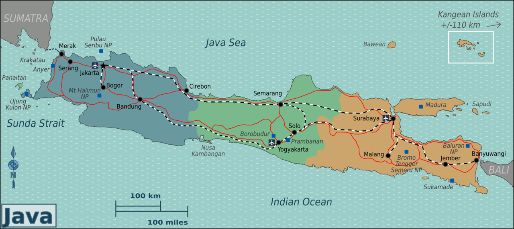

{{ post.data.title }}
{{ post.data.date | toReadableDate }} - {{ post.data.description }}
Hi! I'm Zul, a muslim Indonesian, living in Java Island. Currently hopping on programmer-land and mostly coding JavaScript.
{{ post.data.date | toReadableDate }} - {{ post.data.description }}